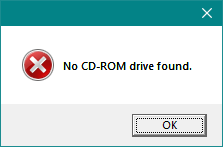
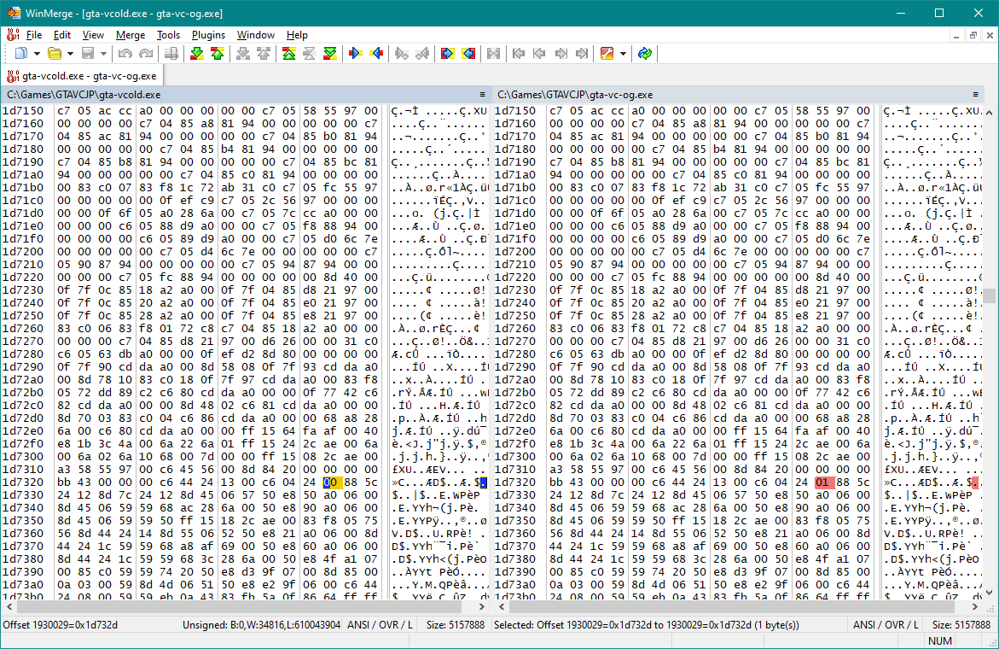
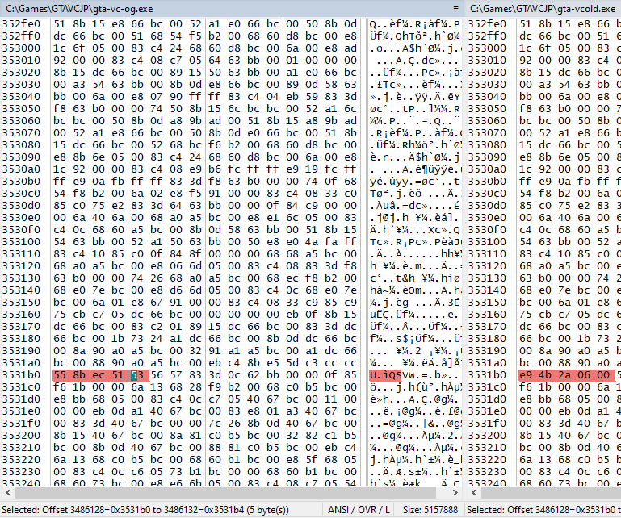
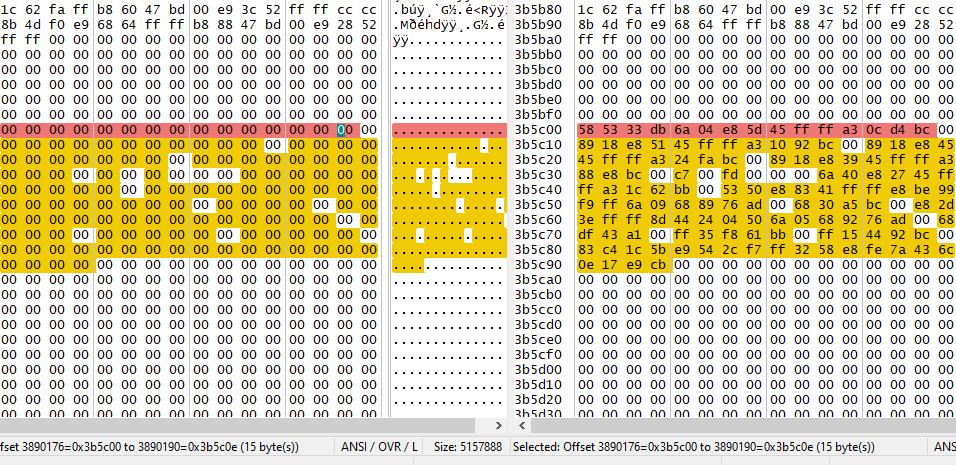
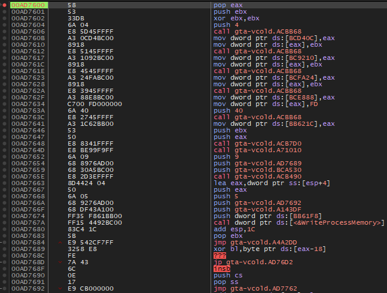
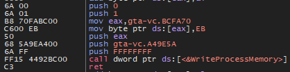

So, GTA Vice City. It's a very popular game which got a Windows release in 2003. Before long, crackers altered the executable file to bypass its digital rights management (DRM) mechanism so that the game could be played without requiring the game disc to be present inside of the players' disc drive. Of course, at this point there wasn't any real reason that a disc needed to be inserted to play a game; gone was the era when CD audio was too big of a proportion of one's hard disk space. This was just serving as a rudimentary anti-piracy measure.
Problem solved, right? Now everyone could conveniently play the game without having to pop in the disc every time. Well, the game got a separate release in Japan in 2004. That was after the publisher, Rockstar Games, already went through quite a bit of controversy surrounding the portrayal of Haitians in the game, and had updated the game files to remove all direct references to Haitians (as well as every other nationality). Thus, all Japanese releases of the game are among the various "Haitian-friendly" versions of the game.
For most people, it would be most desirable to play the original version—it was a vocal minority who took issue with the content of the game, and certainly no actual players were among them. Still, there were surely some Japanese players who wanted to play that version, since they would actually be able to understand the language. So the Japanese PC version was also cracked rather soon after its release. Now everyone is happy, even in Japan.
Fast-forward to 2015. I was well-embedded into the Vice City speedrunning community at this point. A user named Patrick had already discovered that a certain very promising glitch worked on his German (Haitian-friendly) version of the game but not on the standard "international" version. As it turned out, this was because the size of some in-game missions (in bytes) changed as a result of the Haitian-friendly changes. Using a glitch to start a mission while on another mission caused the second mission to be loaded at the current offset into the first mission, and if you got the alignment right, you would end up right at the end of the second mission, instantly passing it. Or as we came to call it, "instapassing" it. This instapass that Patrick found only worked using the Haitian-friendly mission script, but for other reasons, it is not fast to run on the German version, so we had to find another way. Since I knew the Japanese version came out a bit later, I decided to check a ROM of the PS2 Japanese version to see if it was Haitian-friendly, and it was! I quickly bought a copy of the PC version from amazon.co.jp, since I couldn't just find an online download. From that point on, nearly all Vice City speedruns have been performed on the Japanese PC version, using the original no-CD crack from 2004.
The story would pretty much end there, but for a while there has been a slight little caveat about this no-CD crack to work around. I usually like to keep a disc drive in my PC, but that isn't always easy nowadays, so on some setups I would get a strange error when launching the game: "No CD-ROM drive found." Okay... the no-CD crack is meant to bypass the disc check, but it missed the check for the actual disc drive itself! In 2004 this would have been nothing short of an edge case, seeing as every PC had a CD or DVD drive. The easy workaround is to install a virtual drive using Alcohol 120% or the like, but I figured it would be a simple fix and decided to investigate it.

First of all, I wanted to see what the original crack was doing. I used WinMerge to compare the original executable file as shipped with the no-CD crack, took note of the offsets of the areas that changed, and opened them up in x32dbg to view the disassembly.



Now I can investigate these areas in the running program's memory using x32dbg to see if things make sense.
To ensure I could locate the static addresses in loaded memory, I inspected the PE header to get the data needed to calculate where these will load into memory. I confirmed that the image base is 0x400000, so that's the memory address from which the program will be loaded in on launch. Furthermore, the section header for the .text section—the section housing the executable code—reveals that its virtual address is 0x1000, meaning this section will be loaded in at 0x400000 + 0x1000 = 0x401000. Further along, the PointerToRawData variable in the same header indicates the offset at which the executable code starts within the compiled binary, which is 0xE00. This means that I will have to subtract that offset from anything I find in the static file's .text section when mapping it to a memory address. So to sum it all up, add (0x400000 + 0x1000 - 0xE00) = 0x400200 to any static offsets found belonging to the .text section to map them to their location in memory once launched.
Starting with the no-CD crack, I located where I thought the first byte changed was: at 0x5D752D (0x1D732D + 0x400200). I found the following instruction:
C60424 01 | mov byte ptr ss:[esp],1
The exact byte changed is the last one: the value being written to *ESP, i.e. the most recent object pushed to the stack. Hereafter I will be referring to it as the Byte of Interest, or BOI. Now for what that instruction looks like in the original no-CD:
C60424 00 | mov byte ptr ss:[esp],0
Indeed, this is the spot.
So what exactly does this change do? I set a breakpoint and got a hit during the game's initial loading screen, meaning that this is past the point of any third-party DRM which, for games from that era, usually runs before the game itself launches. That is to say, it seemed likely that this was Rockstar's own in-game disc check. I tried editing the instruction back to writing a 01 byte to see what would happen on the retail EXE, but entered an infinite loop.
As I observed the values in the registers as the loop iterated, I could see that the instruction setting the BOI is run at the start of each iteration. Also, all the letters of the alphabet were being loaded one at a time, one per iteration. A few instructions into the loop, I found a call to Windows's GetDriveTypeA function followed by a check for whether the return value is equal to 5 (which means optical drive, as confirmed in Microsoft's documentation). It became obvious that this must be where it checks every possible Windows drive letter to see which drives are disc drives, and also where it would be checking for the presence of the "Play" disc usually required in order to play. Once the loop counter is greater than 0x5A = 'Z', the loop ends and the code immediately checks if the BOI is 0 or not, i.e. whether the disc check succeeded or not.
Anyway, during the aforementioned infinite loop, the game displays an error message (translated from Japanese): "Please insert the GTA: Vice City 'Play' disc into the drive. Press Esc to cancel." This makes sense now; the infinite loop is so that the error resolves itself as soon as the right disc is inserted and confirmed by the code.
Since the no-CD crack changes the value being set on the BOI, that probably means it is being checked somewhere as part of the disc check. To find exactly where, I set an access breakpoint on the BOI and found that there is a cmp instruction followed by a conditional jump at 0x5D75C1:
Note that ESP at this point is still the same as it was, so it is checking our BOI. So basically, this is a branch in the code based on whether the BOI is equal to 0 or not; if the BOI is anything but 0, we get the error message.
I took a quick look at what the conditions for setting this byte to 0 under normal circumstances were. Within the drive letter scanning loop, I found a spot where the BOI is set to 0, followed by a break out of the loop. Right before it lies the only conditional jump in the loop; if the return value of a certain function is 0, this jump is taken which skips over the instruction that sets the BOI to 0. That must be the crucial disc validation function, and a nonzero return value must mean a successful disc check.
To organize the facts so far: we have a loop that goes through each letter of the alphabet in order to check every Windows drive. At the start of this loop, the BOI is set to 1 (in the original EXE). If the drive is not an optical drive, continue the loop; otherwise, proceed further. Some disc validation function is called; if it returns 0, the disc check fails and the loop is continued. Otherwise, set the BOI to 0 and break out of the loop. Then the BOI is checked: if it is 0, the game loads to the main menu; otherwise, the error message described above is shown. So I can see now that the no-CD crack skips the error by simply setting the BOI to 0 on each iteration of the loop, so even when it finishes iterating through all the letters without a successful disc check, the BOI is already set to the desired value anyway, so the error message is never shown.
While it would be interesting to investigate the disc-checking procedure in more detail, that is something for another time. Let's move on to the other changes made in the original no-CD crack.
The interesting thing about these is that they aren't actually in the .text section. If I try applying my .text file-offset to memory-offset value here, I end up with addresses that fall squarely in .bss, which makes no sense as that is for uninitialized variables and therefore won't contain anything on disk at all. So I went back to the PE header to determine which section they are in. Eventually I got to a section named .bcvb, with a PointerToRawData of 2ED600 and a VirtualSize of CA000, encompassing bytes 2ED600 to 3B7600 of the file, which both of my remaining offsets of interest fall within. Finally, I calculate the "disk-to-memory mapping constant" for .bcvb: the VirtualAddress is 60F000, so the formula is 0x400000+60F000-2ED600 = 721A00.
So the offsets in memory must be:
The 5 bytes that were altered are obviously for a jump to the code cave, and indeed:
E9 4B2A0600 | jmp gta-vc.AD7600
And this is what the code cave looks like:

Scanning over the code cave as well as other areas of the DRM code, it appears that the code cave is reusing certain functions and variables from the DRM code; my guess is that rather than skipping the check altogether, the code cave is trying to emulate a successful DRM check, whatever form that may take. For example, some DRM mechanisms verify the outcome of reading a certain intentionally-damaged part of the disc. I imagine this method was somewhat tedious to figure out, so my hypothesis is that there is some reason it was done this way.
While I would like to dig deeper into this, for now it is a little out of scope. But at this point I knew more or less what the original no-CD crack was doing.
While I didn't delve deep enough to know exactly how to alter the original no-CD's code cave to fix my little issue, it was time to find out what could be done. Firstly, I had to locate whereabouts I needed to make changes. Simple enough; I just had to reproduce the "no CD-ROM drive found" error by unassigning my optical drives' drive letters, then see where the instruction pointer is in x32dbg when the error appears.
I set a few hardware breakpoints (interestingly, the software ones seemed to be getting disabled by the DRM) and compared the execution flow in the environment where the error appears vs. where it does not. I basically had to locate which conditional check was specifically branching to this error and get rid of it so that the code would always go the way it does when no errors would appear. I quickly found it and it was clear what had to change: a conditional jump (jne) at A49E5A had to become an unconditional jump (jmp), a 1-byte change. However, I came across several problems:
With this information, I decided that a code cave would give me the space needed to write a hack that might work.
First, I chose where to place the code cave; to keep it simple, I placed it a few bytes after the original no-CD's code cave (at AD769B). Then, I set a hardware write breakpoint on the byte I wanted to alter to find which instruction deobfuscates that region. Right below the deobfuscating function call, I found a 'ret' instruction followed by some padding (at A105A9), which gave me enough room to replace the 'ret' with a jump to my code cave location.
Now to get the cave set up. Since plain old 'mov' didn't work, I would need to call Windows's WriteProcessMemory function. As I learned from developing the VC Mouse Fix, this function would let me bypass some memory protection limitations.
To confirm which values I would need to push and in what order when making the function call, I checked Microsoft's documentation. WriteProcessMemory takes the following parameters:
Now WriteProcessMemory can be called, followed by the original 'ret' that I overwrote. With the cave complete, the only thing left was to try it out.

To be transparent, I don't recall how many bugs I had to fix in the code cave, but in the end, it worked! This updated version of the no-CD crack will prove useful for those without optical drives when they are getting set up to do speedruns of GTA Vice City (or Japanese people who want to play on PC without an optical drive). This took me a couple of days from start to finish, and it was my first time successfully performing any sort of hacking with assembly. I had tried my hand at figuring out x32dbg and Ghidra with some other similar project ideas prior to this, but perhaps due to my inexperience, I had not been able to get anywhere until now. I learned about some of the particulars of x86 assembly along the way and got exposure to how code might be secured/obfuscated, and circumventing such mechanisms. (I might even be able to make a cleaner version of the original no-CD crack, not that it's necessary.)